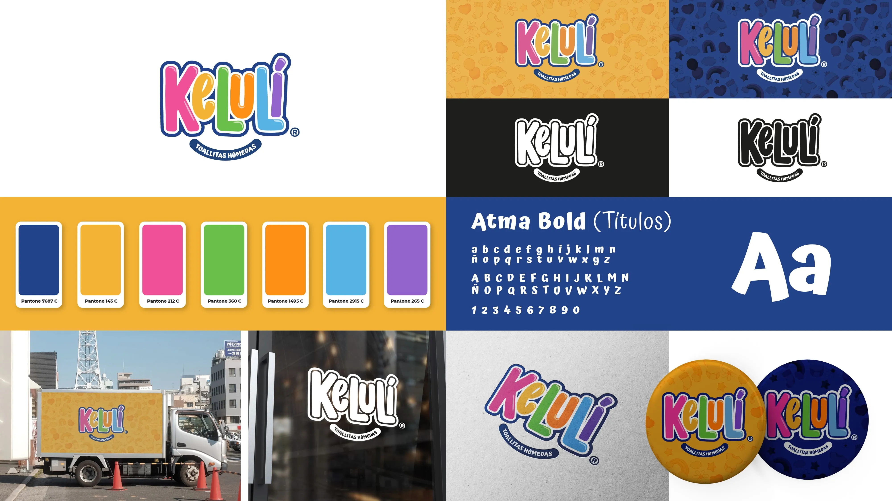
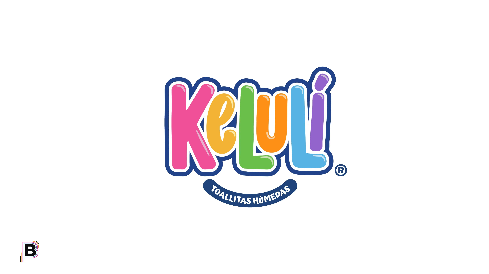
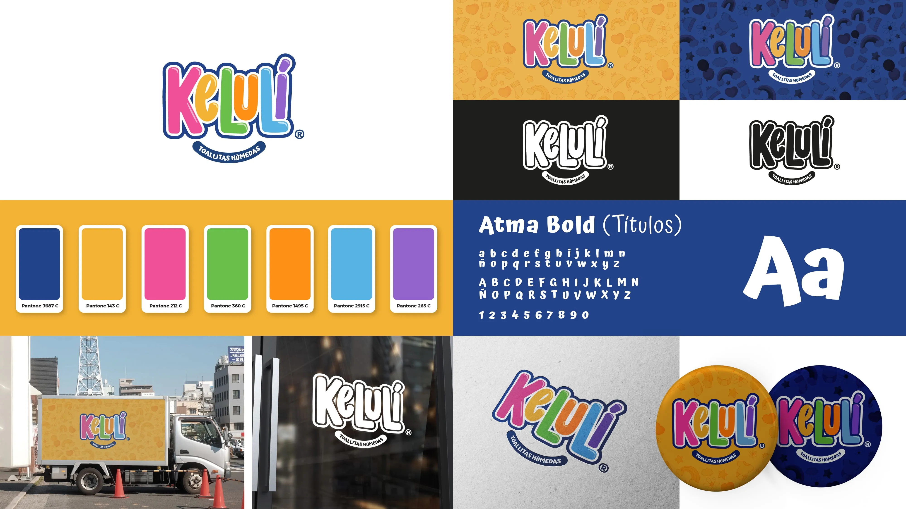
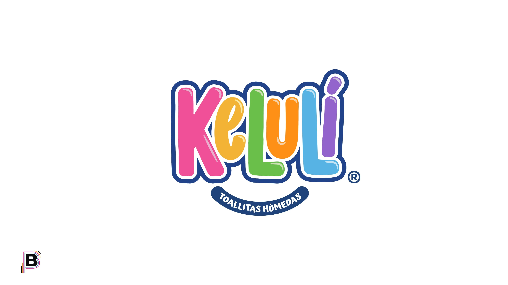
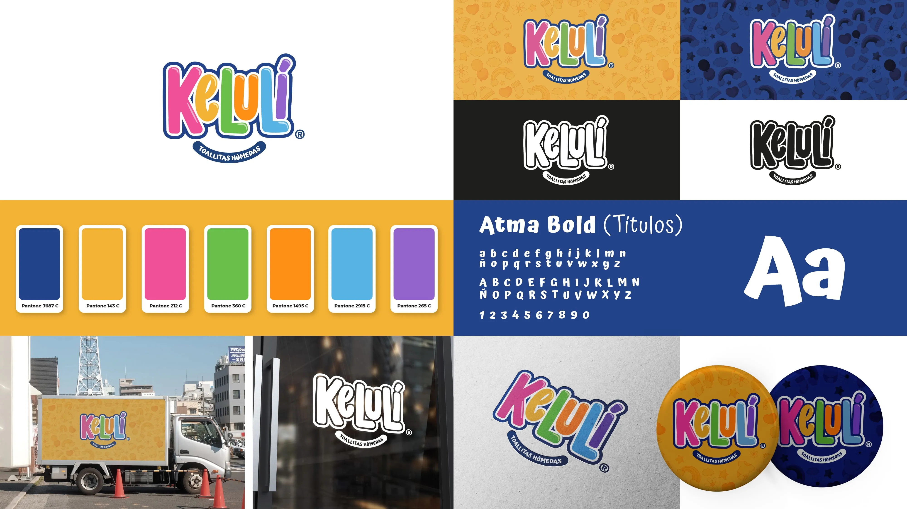
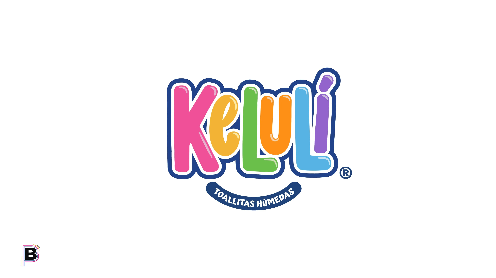

¡Atención! Esta presentación fue creada para ser mostrada en directo. No se encuentra adaptada al formato web.
Marca nueva de toallitas húmedas que planea posicionarse en el mercado con una buena imagen y un excelente producto.

